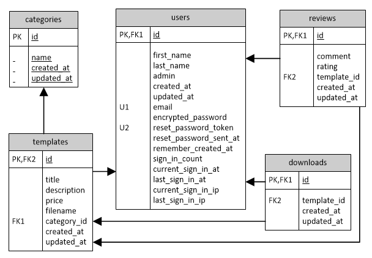
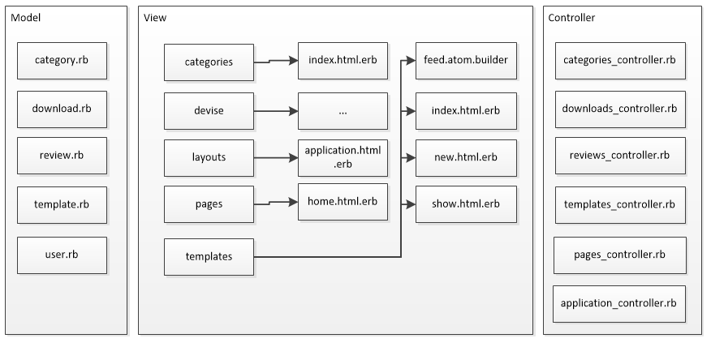
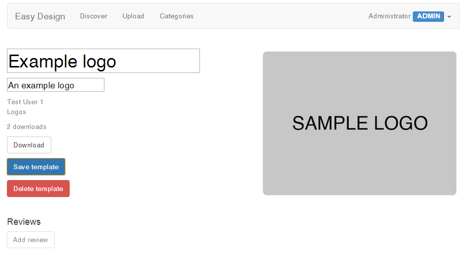
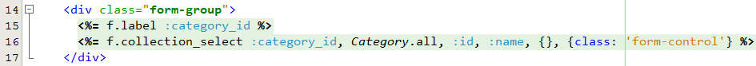

This technical manual will cover the system architecture of Easy Design,
explain which features from the specification have been implemented,
and the tools, technologies and techniques that have been used throughout
development.
Contents
Overview
Introduction
Easy Design is a new startup company launching a service to enable
customers such as charities and organisations to quickly produce well
designed logos, posters and flyers based on user generated content.
The site will make money through advertising.
Implemented User Stories
1. Upload content
Content creators upload their created design templates to the site. They
must first register with the site before being able to upload content.
2. Browsing content
Customers can search and browse the site to discover the content
they are looking for. They can browse by content type (e.g. logos, posters, flyers)
or by search term.
Newly uploaded templates, those with a high number of downloads
and those with high ratings will be displayed on the home page.
3. Downloading content
When a customer finds a design they like, they can download a high quality
version of the design which they can then edit before printing out or
uploading to their own web site.
A customer must register with the site to be able to download the design.
4. Reviewing content
When a customer has downloaded a design, they gain permission to rate
and review it. The system can then recommend additional
content to customer based upon this information.
5. System Management
Administrators are able to do additional actions to normal users. They
can edit and delete templates as well as add and edit categories.
Architecture and Design
Entity Relationship Diagram
An Entity Relationship Diagram is shown below based on the final
schema of the database. It shows the different tables in the database
and their foreign key relations.

System Structure
The system is structured using the Model–view–controller (MVC) software
pattern. The diagram below shows the different MVC components.

Implemented Features
Below are a list of features that have been implemented in Easy Design,
along with a brief explanation and accompanying evidence.
Template catalogue
Items (eg products) are stored in a dynamic and editable hierarchy,
which can easily be browsed and searched
Each template in the database is assigned a category. Users can browse
templates by category, or search for a template by name or description.
Searching is provided using Thinking Sphinx,
a Ruby library that connects to the Sphinx
search server.
Thinking Sphinx provides a search method that can be used
on the database models. An indexing file, /app/indices/template_index.rb (shown below), is required so
Sphinx knows what properties of the models to index.
Administrators can add or edit categories by visiting /categories.
The code snippet below shows the create method in
/app/controllers/categories_controller.rb.
def create
@category = Category.new(category_params)
@category.save
redirect_to '/categories'
end
Recommendation System
a personalised dynamic recommender system
Easy Design provides a recommendation system for users. A list of
possible recommendations are shown on the home page. The algorithm
works in three steps:
Get all templates the user has downloaded
For each template, get other users who have downloaded that template
For each of these users, get all other templates they have downloaded
Recommend those templates to the user
The full source for the algorithm can be found in the home
method in /app/controllers/pages_controller.rb.
Template management
Display and update work items involving multiple users and roles
A list of all templates can be found through /discover or
/templates. Individual templates can then be viewed through
the /templates/{template_id} endpoint. Administrators can
update or delete a template using the provided buttons.

Screenshot showing a template being edited by an administrator
Review System
Users can post comments or messages to selected roles, view them, rate, filter and sort them appropriately.
Users can review a template and give it a rating. They are only able
to post one review per template.
The create review method from /app/controllers/reviews_controller.rb
is shown below.
Dynamic generation of images (eg visualisation of business objects or statistics) and multimedia manipulation (eg scaling or compression).
For each template image uploaded to Easy Design, the system generates
a preview image and a smaller thumbnail image. The preview image is shown
on the template page (e.g. /templates/1) and the thumbnail
is shown on the discover page. The size of the generated images can be
set in /config/application.rb.
The system uses ImageMagick
to generate the preview and thumbnail images. The snippet from
the create method in /app/controllers/templates_controller.rb
below shows the image generation code.
# Upload image file
# From http://guides.rubyonrails.org/form_helpers.html#uploading-files
uploaded_io = params[:template][:image]
@template.filename = SecureRandom.uuid
File.open(Rails.root.join('public', 'uploads', @template.filename), 'wb') do |file|
# Create full size file, preview and thumbnail versions
file.write(uploaded_io.read)
system "convert #{file.path} -resize #{Rails.configuration.preview_size} #{file.path}#{Rails.configuration.preview_extension}"
system "convert #{file.path} -resize #{Rails.configuration.thumbnail_size} #{file.path}#{Rails.configuration.thumbnail_extension}"
end
Data Import
Inclusion of live data from external sources (eg other web sites) via protocols such as RSS, using XML formatted data
Not currently implemented
Data Export
Export of internally stored business data for use in external sites, using XML formatted data.
Easy Design has a public ATOM feed of all the templates in the system.
This would allow other developers to make use of the templates uploaded
to Easy Design and include them as part of their own web applications.
The feed method from /app/controllers/templates_controller.rb,
shown below, demonstrates this.
Professional appearance with logo, master pages, style sheets, site menus, breadcrumbs, login status and multi-part forms.
Twitter Bootstrap has been used
throughout the site to give a consistent and professional look and feel.
Individual stylesheets have been used for the different sections of the
site, to prevent the browser requesting unnecessary styles.
The site menu is displayed in the top navigation bar, and the login
status to the right of the navigation bar. Breadcrumbs are not required
because the only nested navigation occurs when viewing a template.
multipart/form-data was used when in the upload form. The code
snippet below shows the HTML that is generated by the form found in
/app/views/templates/new.html.erb.
Professional IDE, including WYSIWYG or syntax-highlighting HTML editor, database administration, and on-the fly display and debugging of web pages and code.
The NetBeans IDE with the
Ruby plugin was used to
develop Easy Design. The screenshot below shows the syntax-highlighting
for both HTML and Ruby syntax.

NetBeans IDE showing syntax highlighting
From /app/views/templates/new.html.erb
Database administration was provided through the high level
Active Record Query Interface, and at a lower level through
HeidiSQL. Active Record also
provided object relational mapping and database/schema generation.
Easy Design was tested in the Google Chrome 31
web browser. Debugging was provided through the Chrome Developer tools
and debugging messages provided by Rails.
The screenshot of the NetBeans IDE also shows form markup generation.
There was no need to manually write the HTML for the form elements.
For example, <%= form_for :template, url: templates_path do |f| >>
produces <form accept-charset="UTF-8" action="/templates" enctype="multipart/form-data" method="post">.
External libraries
External libraries and web services.
The following external libraries were used in the project:
Clear separation of layers or tiers (eg MVC); maintainable code. Enterprise / web architecture patterns.
Through using Rails, the Model-view-controller (MVC) software pattern was used. I strove
to write well-designed code that would be readable, extensible and
maintainable.
Advanced Web Controls
Web controls or widgets eg rich text editor.
Automated validation of entered data.
Not currently implemented.
User authentication
Sessions or cookies. Secure access, authentication, roles.
devise was used
to handle sessions and user authentication. An admin field
was added to the User model to store if the user was an administrator.
Data Integrity
Data integrity and consistency. Database constraints, triggers, referential integrity, prepared statements, transactions. BLOBs. Database exception handling.
Active Record maintained data integrity and managed all interactions
with the database.